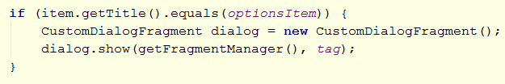
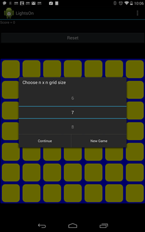

This is the final lab covering the LightsOn puzzle. The aim is to study some further Android topics, and then build these into an improved version of LightsOn.
The main topics to be covered are:
We'll also pay some attention to how to randomise the puzzle with some care.
Note: mention is also made of Fragments. We've not covered these yet, but they behave a bit like mini-activities and are useful in building apps that scale well across multiple device resolutions. Fragments are briefly covered in the Fragments notes, and you can read more here.
In the previous lab we added an "About" menu to the app. Now by referring to the Menus and Dialogs lecture notes or the Android developer resources add at another menu item called Options, and create specific icons for your menu items, and also experiment with adding them to the ActionBar.
The MenusAndDialogs.zip project contains the code discussed in the lecture, including the experiemtal dynamic icon generation code.
Exercise:
By referring to the Dialogs documentation (you might also find the Menus and Dialogs notes useful as they contain some of the key points) create an OptionsDialog that enables the user to select the size of the n x n grid, and also the number of steps that a randomised puzzle will be away from the goal.
The code provided below offers a partial solution to this. From the Menus part you should already have an "options" item added to the options menu. In the onOptionsItemSelected event handling method add the following code to handle the selection of the "options" item (define a static variable for this called optionsItem).

We then need to create the CustomDialogFragment class, and example of which is shown below. This will follow on from the examples provided in the the Dialogs documentation. Note the following:
Interestingly, the default behaviour of this is rather annoying:: it pops up a keyboard as illustrated below. This could be useful sometimes, but for selecting numbers from such a small range is just ridiculous.

Fixing this: by doing a web search work out how to disable the keyboard, and arrive at the more satisfactory behaviour shown below:

To finish off this part you can either add more to a single custom dialog, or alternatively add another item to the options menu to pop a different custom dialog to enable selection of the number of steps to goal.
In this section we return to some model logic that is independent of Android.
Suppose you start the puzzle in the solved state with all the lights on. How will you guarantee to put the puzzle in a state which is n steps away from the solution?
Actually, this is a potentially difficult problem as n gets large. However, for small n there are probably some simple tricks you can use to avoid obvious errors. An obviously erroneous algorithm would be:
repeat n times pick a grid square at random and flip the lights for that square
Question: why is that erroneous? (think how it could go horribly wrong even for n=2)
Note: you should also add a Randomise button to your app to invoke the randomise function.
Finally, you may want to add some game state management. This is distinct from the lifecycle state of the app, but can be useful in managing the app while it is in the resumed state. For example, if the user wishes to change the grid size, you might disallow this during the middle of a game (or at least warn that this will destroy the current game).
Parts of this lab have been a bit open-ended - so we'll be very interested to see the solutions you develop! A solution that demostrates the key concepts will be circulated some time after the lab.